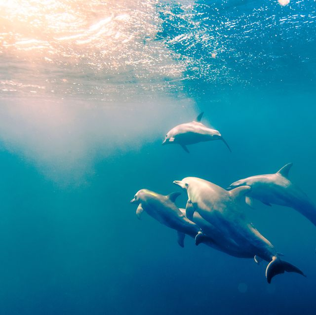

Dolphins are aquatic animals that can weigh up to 6 tons! Most of them live in the ocean but a few species like the South Asian river dolphin live in freshwater. Dolphin eat fish and squid. They use echolocation which is a built in sensor that bounces off sound waves of preys and reveals their locations, size and shape.
Dolphins are very social animals. They live in pods which contains a dozen or more. They communicate by whistles, clicks and squeaks. Dolphins are mammals too and they need to go back up to the surface for air.
